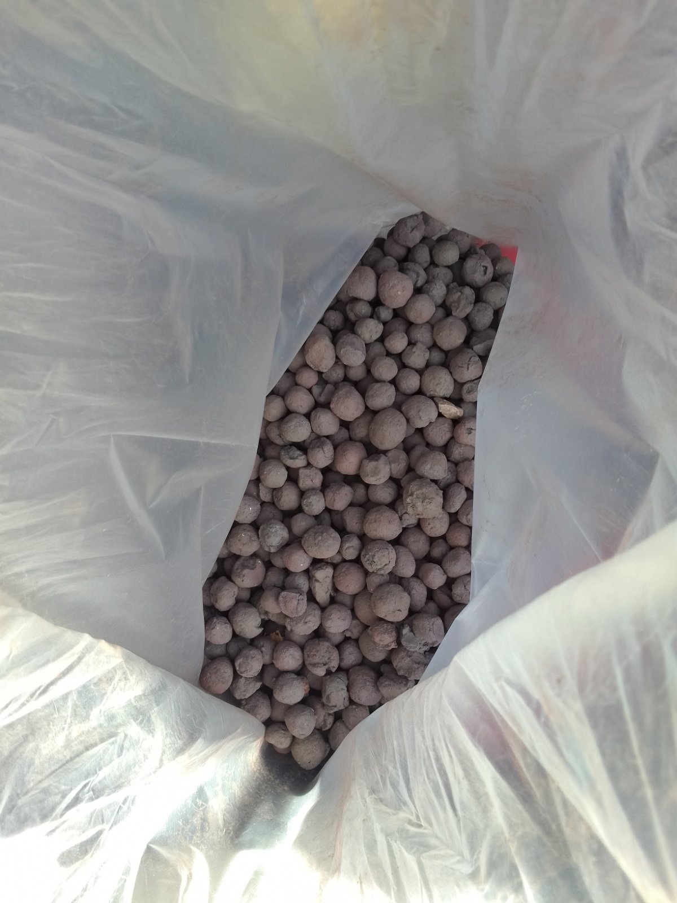

Who we are?
Established in 2021 from chemical engineer Stanko Ilikj Popov
Main goals when the laboratory was opened were chemical and
mechanical control of building materials for civil construction,
innovations in the waste industry management, innovations in
usage of industrial waste, increasing the environmental
awareness threw using industrial, communal and civil
construction waste as raw materials for new products.
In 2022 the company IMK got the attention of a Switzerland
potential partner and by the end of year 2022 got foreign
capital for investing in laboratory instruments.
In the same year IMK was supported by start up fond SECO
(Federal Department of Economic Affairs of Switzerland).
What we have done so far?
Environmental study for EuroNickel Industri Kavadarci for using
generators for electricity production
The study was done for usage of heavy oil as burning fuel for
electricity production. The problem was the aero pollution and
the content of sulphur in the heavy oil. The solution that IMK
presented was SCR catalyst unit decreasing the levels of
pollutants to permissible limits.
Hexavalent chromium neutralization from dump fill Jugohrom
IMK as company developed chemical method for neutralization of
hexavalent chromium present in solid and liquid materials with
using of advanced machinery and techniques.
The same approach of work can be used for arsenic, cyanide and
heavy metal removal.
The content of hexavalent chromium in the samples was decreased
from 2.5 g/l to 0.005 mg/l.
Creating briquettes from industrial waste

Iron, copper and zinc are materials which are getting
more and more expensive by the day
IMK laboratory found a suitable bonding mixture to make
briquettes from industrial waste with small granulation
creating briquettes. These briquettes can be transported
as raw material for high furnaces or melt shops and the
material can be transported as solid form not in ash
form.
Using metallurgical sludge as base material for bedding and
bonding
IMK Laboratory used washed metallurgical sludge for
increasing the heat resistance and earthquake resistance of
bedding materials
In this research the goal was to stabilize the bed of the
soil where civil construction should take place making it
seismologically more stable
Reusing of old tires and creating energy, heat and paving
elements
IMK generated a way of using old tyres and giving them a new
life form and new usage as energy fuel, heat producer and raw
material for paving elements.
Producing of wall tiles made from waste marble considered as no
usable material in marble quarries
Using metallurgical forgery as raw material for iron briquettes
(from waste to raw material)

Usage of lime waste for facade base
Producing fertilizer from sludge from EAF furnace
By separating the metallic from non metallic part from the
sludge from EAF furnace we can get two portions of usable
material.
One portion is metallic part rich with iron.
Thomas phosphate, also called Thomas flour or Thomas slag, is a
phosphorus-rich by-product that is formed in the Tomas Process,
where limestone is used to remove phosphorus from the iron.
Thomas phosphate contains approximately 43% CaO and 21% P2O5.
The rest is mainly FeO and SiO2.
What are our future plans?
-
We as a laboratory state that there is no material that can
not be reused as raw material for producing a product.
-
Secondary materials are very important part of todays
circular economy and we are prepared to find a suitable
usage for all industrial and civil construction waste
materials.
-
Raw materials from industrial dump fills are an
environmental problem if not treated and reused for another
purpose.
-
Civil construction waste materials are also an environmental
problem if left on municipal dump fills because the time
needed for their decomposition is very long.
-
We will continue our work and our innovation in this field
and find a suitable solution for every partner and client.